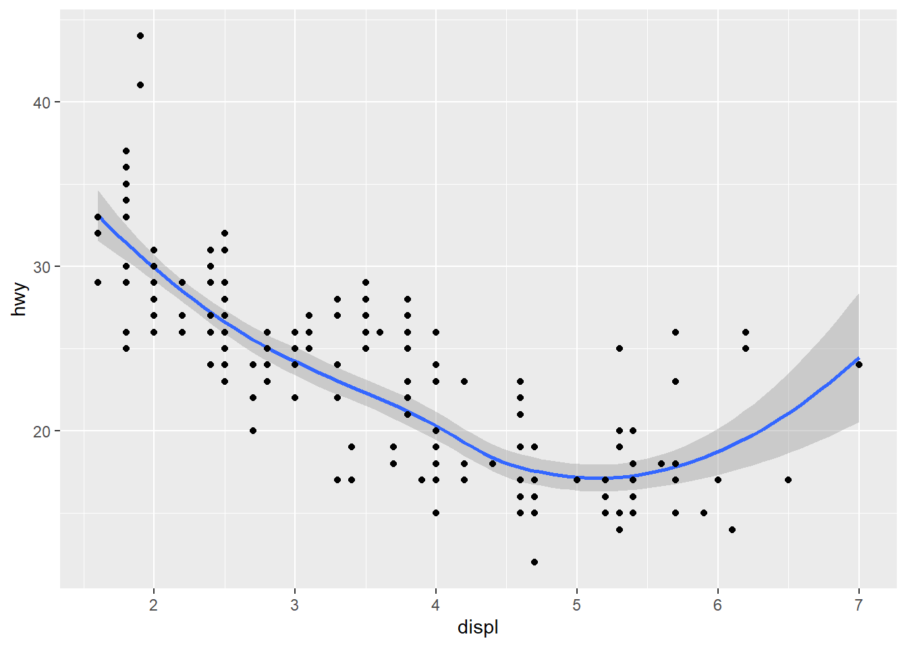

### 패키지 설치, 라이브러리 실행
#install.packages("ggplot2")
#install.packages("dplyr")
library(ggplot2)
library(dplyr)
#>
#> Attaching package: 'dplyr'
#> The following objects are masked from 'package:stats':
#>
#> filter, lag
#> The following objects are masked from 'package:base':
#>
#> intersect, setdiff, setequal, union|
|
ggplot2 Basic
1 그래프 패키지(Packages)
1.0.0.1 [ggplot2] package : R에서 사용할 수 있는 대표적인 그래픽 도구
- 그래프 결과를 그림 파일로 출력(정적)
- Top 50 ggplot2 Visualizations
- 참고 http://r-statistics.co/Top50-Ggplot2-Visualizations-MasterList-R-Code.html
1.0.0.2 [plotly] package - 대화형 그래프 라이브러리로 Python, R, JavaScript 라이브러리를 제공
- 그래프 결과를 HTML 파일로 출력(동적)
- 값 확인, 확대/축소, 이동, 필터 등의 기능을 제공하여 자료 탐색 가능
- Plotly R Open Source Graphing Library
- 참고 https://plotly.com/r/ - Plotly 패키지에 ggplot2 패키지가 포함되어 있음
2 [ggplot2] package
2.0.0.1 기본 3요소
- data: 시각화 자료 - 데이터프레임
- geom: 시각화 종류
- 점: geom_point()
- 선: geom_line()
- 막대: eom_bar()
- aesthetics: 시각화 특성 aes()
- 위치: x, y
- 크기: size
- 색상: col, fill
- 농도: alpha
2.0.0.2 레이어 추가
- ‘+’ 연산자를 사용하여 레이어를 추가하는 형식으로 그래프를 추가하거나 수정함
2.0.0.3 ggplot() 함수
- 그래프를 그리는 기본 함수로 다양한 함수를 추가(+)하여 정교한 그래프를 생성
2.0.0.4 제목과 축의 이름 설정
- ggtitle(), xlab(), ylab() 함수
- labs() 함수
2.0.0.5 qplot() 함수
- Quick plot: 기본 plot() 함수에 익숙한 사용자를 위한 빠른 그래프 생성
3 ggplot2 실습
### [mpg]데이터셋 불러오기, 파악
data_raw <- read.csv("https://vincentarelbundock.github.io/Rdatasets/csv/ggplot2/mpg.csv")
# 데이터 차원 파악
data_raw %>% dim()
#> [1] 234 12
# 데이터 앞부분 출력
data_raw %>% head()
#> X manufacturer model displ year cyl trans drv cty hwy fl class
#> 1 1 audi a4 1.8 1999 4 auto(l5) f 18 29 p compact
#> 2 2 audi a4 1.8 1999 4 manual(m5) f 21 29 p compact
#> 3 3 audi a4 2.0 2008 4 manual(m6) f 20 31 p compact
#> 4 4 audi a4 2.0 2008 4 auto(av) f 21 30 p compact
#> 5 5 audi a4 2.8 1999 6 auto(l5) f 16 26 p compact
#> 6 6 audi a4 2.8 1999 6 manual(m5) f 18 26 p compact
# 데이터 요약 정보
data_raw %>% summary()
#> X manufacturer model displ
#> Min. : 1.00 Length:234 Length:234 Min. :1.600
#> 1st Qu.: 59.25 Class :character Class :character 1st Qu.:2.400
#> Median :117.50 Mode :character Mode :character Median :3.300
#> Mean :117.50 Mean :3.472
#> 3rd Qu.:175.75 3rd Qu.:4.600
#> Max. :234.00 Max. :7.000
#> year cyl trans drv
#> Min. :1999 Min. :4.000 Length:234 Length:234
#> 1st Qu.:1999 1st Qu.:4.000 Class :character Class :character
#> Median :2004 Median :6.000 Mode :character Mode :character
#> Mean :2004 Mean :5.889
#> 3rd Qu.:2008 3rd Qu.:8.000
#> Max. :2008 Max. :8.000
#> cty hwy fl class
#> Min. : 9.00 Min. :12.00 Length:234 Length:234
#> 1st Qu.:14.00 1st Qu.:18.00 Class :character Class :character
#> Median :17.00 Median :24.00 Mode :character Mode :character
#> Mean :16.86 Mean :23.44
#> 3rd Qu.:19.00 3rd Qu.:27.00
#> Max. :35.00 Max. :44.00### 첫 번째 컬럼 제거 (X 컬럼 제거)
data_use <- data_raw %>% select(-1)
data_use %>% head()
#> manufacturer model displ year cyl trans drv cty hwy fl class
#> 1 audi a4 1.8 1999 4 auto(l5) f 18 29 p compact
#> 2 audi a4 1.8 1999 4 manual(m5) f 21 29 p compact
#> 3 audi a4 2.0 2008 4 manual(m6) f 20 31 p compact
#> 4 audi a4 2.0 2008 4 auto(av) f 21 30 p compact
#> 5 audi a4 2.8 1999 6 auto(l5) f 16 26 p compact
#> 6 audi a4 2.8 1999 6 manual(m5) f 18 26 p compact### ggplot() : 시각화 자료 + 시각화 특성
# x축, y축 지정
ggplot(data_use, aes(x=displ, y=hwy))
### ggplot: 시각화 자료 + 시각화 특성 + 시각화 종류
# x=displ, y=hwy 값을 point로 그리기
# 첫 번째 방법
ggplot(data_use, aes(x=displ, y=hwy)) + geom_point()
# 두 번째 방법
ggplot(data_use) + geom_point(aes(x=displ, y=hwy))
# 세 번째 방법
ggplot() + geom_point(aes(x=displ, y=hwy), data=data_use)
### Smooth line & SE
# 스무스한 선으로 그리기
ggplot(data_use, aes(x=displ, y=hwy)) + geom_smooth()
#> `geom_smooth()` using method = 'loess' and formula = 'y ~ x'
# point 추가
ggplot(data_use, aes(x=displ,y=hwy)) + geom_smooth() + geom_point()
#> `geom_smooth()` using method = 'loess' and formula = 'y ~ x'